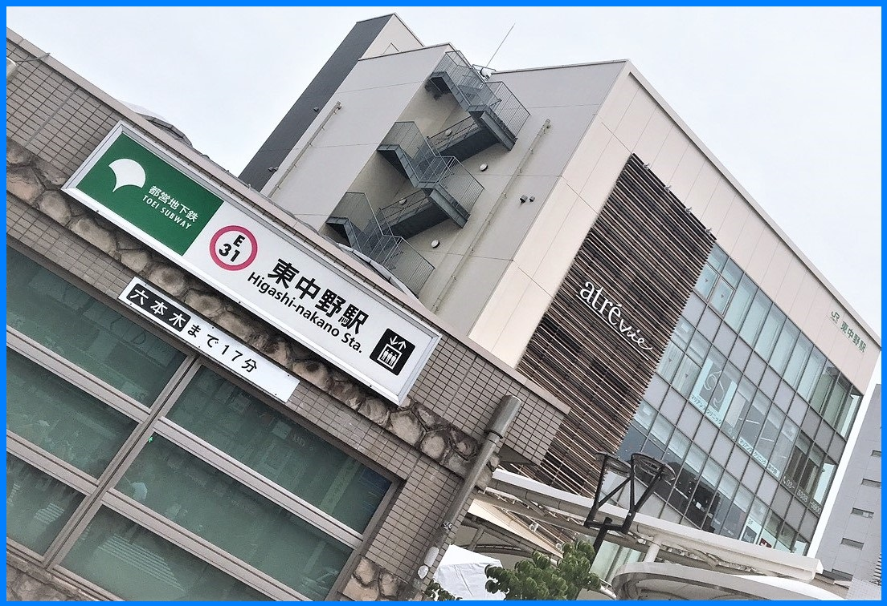

このHPについて・・・

このサイトではおもに東中野のおすすめカフェや
周辺自然環境、住みやすさ等を掲載しています！
また、「東中野はどんなところ？」などの
東中野がどんなところかを
知りたい人向けに掲載しています。
---東中野最新情報---
- １０月12日
|---------------------------------準備中---------------------------------|
- １０月11日
|---------------------------------準備中---------------------------------|
- １０月10日
|---------------------------------準備中---------------------------------|
- １０月 9日
|---------------------------------準備中---------------------------------|
- １０月 8日
|---------------------------------準備中---------------------------------|
- １０月 7日
|---------------------------------準備中---------------------------------|
- １０月 6日
|---------------------------------準備中---------------------------------|
- １０月 5日
|---------------------------------準備中---------------------------------|
- １０月 4日
|---------------------------------準備中---------------------------------|
- １０月 3日
|---------------------------------準備中---------------------------------|
- １０月 2日
|---------------------------------準備中---------------------------------|
- １０月 1日
|---------------------------------準備中---------------------------------|
東中野区情報
家賃相場 １DKで１０．１万円 少し高め
立地 新宿5分、渋谷17分
住みやすさ ★★★☆☆
人口 ★★★☆☆ 316,740人
犯罪発生率 ★☆☆☆☆ 1.05％
外国人居住数 ★★★☆☆ 11,641人
東中野アクセス
JR中央・総武線、都営地下鉄大江戸線 交通情報はこちら
参照：Google Map